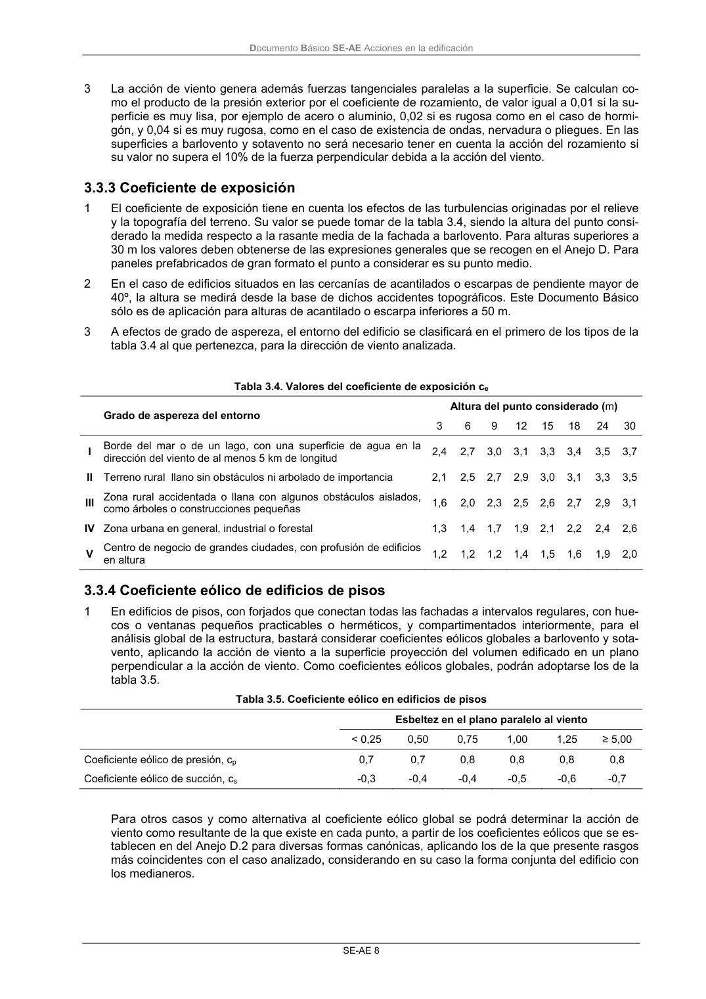

DB-SE-AE · 3.3.3 Coeficiente de exposición · versión 2009-04 · capa oficial
Formatos: JSON compacto · Markdown · PDF fuente
Ámbito del documento · texto del ámbito · documento y tablas
ID técnico a0021 · PDF pág. 12 · jerarquía no validada por persona · contrastado con el literal de la página 12 (candidato tipográfico); no validado por persona · padre: raíz
3.3.3 Coeficiente de exposición 1 El coeficiente de exposición tiene en cuenta los efectos de las turbulencias originadas por el relieve y la topografía del terreno. Su valor se puede tomar de la tabla 3.4, siendo la altura del punto consi- derado la medida respecto a la rasante media de la fachada a barlovento. Para alturas superiores a 30 m los valores deben obtenerse de las expresiones generales que se recogen en el Anejo D. Para paneles prefabricados de gran formato el punto a considerar es su punto medio. 2 En el caso de edificios situados en las cercanías de acantilados o escarpas de pendiente mayor de 40º, la altura se medirá desde la base de dichos accidentes topográficos. Este Documento Básico sólo es de aplicación para alturas de acantilado o escarpa inferiores a 50 m. 3 A efectos de grado de aspereza, el entorno del edificio se clasificará en el primero de los tipos de la tabla 3.4 al que pertenezca, para la dirección de viento analizada. Tabla 3.4. Valores del coeficiente de exposición ce Altura del punto considerado (m) Grado de aspereza del entorno 3 6 9 12 15 18 24 30 I Borde del mar o de un lago, con una superficie de agua en la dirección del viento de al menos 5 km de longitud 2,4 2,7 3,0 3,1 3,3 3,4 3,5 3,7 II Terreno rural llano sin obstáculos ni arbolado de importancia 2,1 2,5 2,7 2,9 3,0 3,1 3,3 3,5 IIIZona rural accidentada o llana con algunos obstáculos aislados, como árboles o construcciones pequeñas 1,6 2,0 2,3 2,5 2,6 2,7 2,9 3,1 IV Zona urbana en general, industrial o forestal 1,3 1,4 1,7 1,9 2,1 2,2 2,4 2,6 VCentro de negocio de grandes ciudades, con profusión de edificios en altura 1,2 1,2 1,2 1,4 1,5 1,6 1,9 2,0

PDF fuente redistribuible: copia fiel enlazada en esta página (SHA256 verificado).